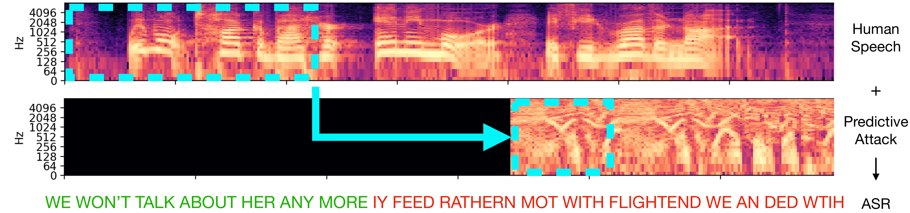

Streaming audio is a particularly demanding domain to disrupt because the calculation needs to be performed in real-time. By the time a sound is computed, time will have passed and the streaming signal will have changed, making standard generative methods obsolete. The sampling rate of audio is at least 16 kHz, meaning the corruption for a given input must be estimated and played over a speaker within milliseconds, which is currently infeasible. Additionally, when attacks are played over-the-air, the attack needs to be loud enough to disrupt any rogue microphone that could be far away. The attack sound needs to carry the same distance as the voice.

We introduce predictive attacks, which are able to disrupt any word that automatic speech recognition models are trained to transcribe. Our approach achieves real-time performance by forecasting an attack on the future of the signal, conditioned on two seconds of input speech. Our attack is opti- mized to have a volume similar to normal background noise, allowing people in a room to converse naturally and without monitoring from an automatic speech recognition system.
@InProceedings{--,
title={Real-Time Neural Voice Camouflage},
author={Chiquier, Mia and Mao, Chengzhi and Vondrick, Carl},
journal={---},
year={2021}
}
We thank Oscar Chang, Dídac Suris Coll-Vinent, Dave Epstein, Basile Van Hoorick, Purva Tendulkar and Jianbo Shi for their helpful feedback. This research is based on work supported by the NSF CRII Award #1850069 and the NSF CAREER Award #2046910. MC is supported by a CAIT Amazon PhD fellowship. The views and conclusions contained herein are those of the authors and should not be interpreted as necessarily representing the official policies, either expressed or implied, of the sponsors.